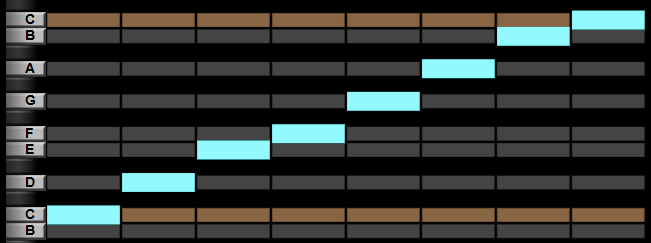

An interval is the difference in pitch between two notes. The difference between two notes on a keyboard is called a semitone or a half step. For example, the difference between B and C on the keyboard is a semitone.
A whole tone or a whole step is equal to two semitones, and is equal to the difference between C and D on the keyboard.
Other intervals are given names such as major third, minor third, perfect fifth, augmented, diminished, etc., but we can understand a good deal of music theory with just these. The point of this guide is not to teach you music theory all at once, but to give you just enough that you may start playing.
A scale starts on a note, called the root note of that scale, and goes up an octave, playing every note in that scale between.
Below is the major scale starting on C, which we call the C major scale. Major scales are sometimes contrasted with the minor scale; the major scale is often considered happier and brighter, while the minor scale is considered sadder, although this is an oversimplification.
The intervals between notes in this scale are all half steps or whole steps. The pattern is WWHWWWH, or whole whole half, whole whole whole half. Any scale with this pattern of intervals is a major scale. For example, if we start on the note D, then we get a D major scale. This scale includes some of the black keys on the piano, C♯ and F♯. The C major scale is the only major scale which uses all seven white keys of the piano.
Scales are closely related to keys in music. A scale is a series of notes played in sequence, while a key is a collection of notes which make up a song. For example, the C major scale consists of the notes CDEFGABC, while a song in C major is a song which contains the notes C,D,E,F,G,A, and B.
A minor scale is a scale which follows a pattern WHWWWHWW of whole and half notes. One example is the A minor scale, which contains the notes ABCDEFGA. The minor scale is often associated with sadder, more plaintive moods than the major scale.
The scale degree of a note in a scale is the position of that number in the scale. For example, in C major (CDEFGAB), the note C is given scale degree 1, D scale degree 2, and so on. This makes it easier to talk about music theory for any scale, not just one, because we don't have to memorize the notes in every scale.
You may notice that the A minor scale (ABCDEFGA) and the C major scale (CDEFGABC) actually contain all the same notes, making A minor and C major relative keys. The difference between C major and A minor scales and keys is that the root note is different, meaning that C major starts and ends on C, and A minor starts and ends on A. When we write a melody in C major, we often write songs which start and end on C, and in A minor, we often write songs which start and end on A. If we decided to choose any other note from C major as our root to build a scale out of, then we would create what is known as a mode. For historic reasons, these modes were given Greek names. The major scale is the Ionian mode, the minor scale is the Aeolian mode, and there are also Dorian, Phrygian, Lydian, Mixolydian, and Locrian modes.
There are many more scales which show up in music, but let's say maybe 99% of popular songs in Western music fall into major, minor, or a mode. Some other scales are pentatonic, whole tone, and blues scales.
A chord is a grouping of several notes of different pitches, either played at the same time or in succession (an arpeggiated chord). Chords are named after their root note and the types of intervals in them. Below is a C major chord played simultaneously and then arpeggiated.
A major chord consists of a root note, a note 4 semitones above called a major third, and a note 7 semitones above called a perfect fifth. For example, C Major consists of the notes C, E, and G; they are the 1st, 3rd, and 5th notes in the C major scale.
A minor chord consists of a root note, a note 3 semitones above called a minor third, and a note 7 semitones above called a perfect fifth. For example, C Minor consists of the notes C, E♭ (the note below E), and G; they are the 1st, 3rd, and 5th notes in the C minor scale.
Let's say we wanted to make chords using only notes in the C major scale. What chords can we make? Starting with C, we know that CEG is a major chord. Starting with D, we see that DFA is a minor chord. We continue to find the minor chord EGB, the major chord FAC, the major chord GBD, and the minor chord ACE. For any of these notes in the scale, if we pick that note and the notes 2 and 4 scale degrees higher, we get a major or a minor chord. The only odd one out is B, the 7th scale degree. Let's give these chords names: take the number of the scale degree of the note, and write it in roman numerals, where we write the roman numerals in uppercase if it is a major chord, and in lowercase if it is a minor chord. So, the chord containing notes CEG is written I, as it is a major chord with root note C or scale degree 1, and the chord containing notes DFA is a minor chord with root note D or scale degree 2, and so is written ii. That last chord, BDF, is called a diminished chord, which we write with a degree symbol, so this chord is written vii°.
Most songs are based on chord progressions. For example, if I say a song in C major uses a I-vi-IV-V progression, then that means the song is in the key of C major, and that it uses the I, IV, iv, V chords in order. Some songs repeat a single chord progression throughout the entire song, while other songs use+ different chord progressions for different parts of the song.
Functional harmony tries to understand chord progressions in music by defining a "function" for each chord in a song. Some of the most important concepts are as follows:
The name of a chord is determined by the notes it contains; for example, the chord containing the notes CEG is a C major chord. However, the keyboard contains C, E, and G notes in many octaves. Two musicians choosing to write the same chord may choose notes in different octaves to play that chord, and may choose to double on some notes.
Typically, the root of a chord is the lowest note played. However, in some voicings the root note is not the lowest note played. For example, a C major chord contains the notes CEG, but sometimes C is not the lowest note. When the root is not the lowest note in a chord, we call that chord an inversion. Inversions function very similarly to non-inverted chords, but because the root of the chord is not played in the bass, the "identity" of the chord is a little lost.
The math and logic of why you would choose between different inversions is something which really matters to some people and is a big part of the Music Theory 101 education, where you learn a lot of complicated rules for writing four-part harmony. Basically, by using different chord voicings and inversions, you give yourself enough freedom to write flowing, elegant harmonies. In the example below, a I-vi-IV-V chord progression is played twice, once with "close harmony," and once with alternative voicings, some of which are inversions. In the tradition of church music, these four parts would be sung by four different ranges (soprano, alto, tenor, and bass), and this method allows each voice to stay in their range instead of jumping up and down every time the chord changes. However, this distinction does not matter in all genres of music; for instance, guitar chords are often only played in root position, and only some genres ever explore other voicings.
Try writing a sequence of I, IV, and V chords.